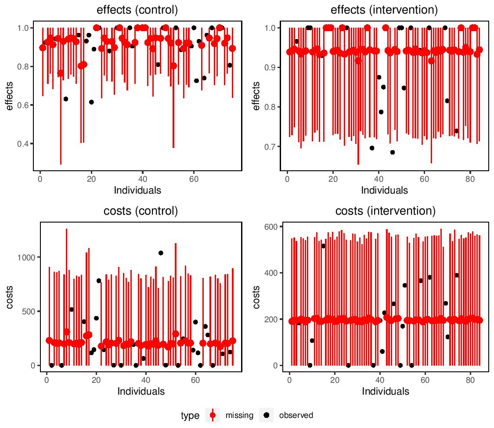

missingHE is a R package aimed at providing some useful tools to analysts in order to handle missing outcome data under a Full Bayesian framework in economic evaluations …
missingHE is a R package aimed at providing some useful tools to analysts in order to handle missing outcome data under a Full Bayesian framework in economic evaluations. The package relies on the R package R2jags to implement Bayesian methods via the statistical software JAGS. The package allows to obtain inferences using Markov Chain Monte Carlo (MCMC) methods under a range of modelling approaches and missing data assumptions. The package also contains functions specifically defined to assess model fit and possible issues in model convergence as well as to summarise the main results from the economic analysis.
Missing data are iteratively imputed using data augmentation methods according to the type of model, distribution and missingness assumptions specified by the user using different arguments in the functions of the package. The posterior distribution of the main quantities of interest (e.g. some suitable measures of costs and clinical benefits) is then summarised to assess the cost-effectiveness of a new intervention (\(t=2\)) against a standard intervention (\(t=1\)).
missingHE produces plots which compares the observed and imputed values for both cost and benefit measures in each treatment intervention considered to detect possible concerns about the plausibility of the imputation methods. In addition, the output of missingHE cab be analysed using different funtions in the R package BCEA which produces a synthesis of the decision process given the current evidence and uncertainty, as well as several indicators that can be used to perform Probabilistic Sensitivity Analysis to parameter and model uncertainty.

Example of a graphical output from missingHE
Example
library(missingHE)model.sel <-selection(data = MenSS, model.eff = e ~ u.0, model.cost = c ~ e, model.me = me ~1, model.mc = mc ~1, type ="MAR", n.chains =2, n.iter =1000, n.burnin =100, dist_e ="norm", dist_c ="norm")
Compiling model graph
Resolving undeclared variables
Allocating nodes
Graph information:
Observed stochastic nodes: 410
Unobserved stochastic nodes: 242
Total graph size: 2399
Initializing model
summary(model.sel)
Cost-effectiveness analysis summary
Comparator intervention: intervention 1
Reference intervention: intervention 2
Parameter estimates under MAR assumption
Comparator intervention
mean sd LB UB
mean effects (t = 1) 0.874 0.016 0.847 0.901
mean costs (t = 1) 236.716 49.778 155.903 319.43
Reference intervention
mean sd LB UB
mean effects (t = 2) 0.917 0.022 0.882 0.952
mean costs (t = 2) 185.896 40.642 120.007 250.279
Incremental results
mean sd LB UB
delta effects 0.043 0.028 -0.002 0.089
delta costs -50.82 63.696 -155.573 55.615
ICER -1191.646
News and updates about missingHE
From 25/09/2019, the updated version (1.2.1) of missingHE has become available on CRAN, which allows to perform posterior predictive checks for each type of model as a further way to assess the fit of the model to the observed data.
The checks can be done by first setting the optional argument ppc = TRUE when fitting the model using one of the main function of the package. For example, when using selection to fit selection models you would have something like this:
model.sel <-selection(data = data, model.eff = e ~ age, model.cost = c ~ age + e, model.me = me ~ age, model.mc = mc ~ age, dist_e ="norm", dist_c ="gamma", type ="MAR", n.iter =1000, ppc =TRUE)
Then you can use the function ppc to perform different types of posterior predictive checks that you can choose among a set of pre-specified types using the type argument. For example, if we want to compare histograms of the empirical and predictive distributions of the effectiveness variable in one arm (e.g. control), then we can type
ppc(model.sel, type ="histogram", outcome ="effects_arm1")
and we get something like this
Example of posterior predictive checks in missingHE
From 07/01/2020, the updated version (1.3.2) of missingHE has become available on CRAN, which allows to choose among more distributions for the effectiveness measures, including continuous (Gamma, Weibull, Exponential, Logistic), discrete (Poisson, Negative Binomial) and binary (Bernoulli) health outcomes.
For example, we can choose to specify a selection model assuming a Bernoulli distribution for the effects (if this is a binary outcome) and a LogNormal distribution for the costs
model.sel <-selection(data = data, model.eff = e ~ age, model.cost = c ~ age + e, model.me = me ~1, model.mc = mc ~1, dist_e ="bern", dist_c ="lnorm", type ="MAR")
From 30/04/2020, the updated version (1.4.0) of missingHE has become available on CRAN, which allows to perform fit random effects for each type of model implemented. The random terms can be specified using the following notation
model.sel <-selection(data = data, model.eff = e ~ age + (age | site), model.cost = c ~ age + e + (age + e | site), model.me = me ~ age + (1| site), model.mc = mc ~ age + (0+ age | site), dist_e ="norm", dist_c ="gamma", type ="MAR", n.iter =10000, ppc =TRUE)
I borrowed this notation, alongside with a couple of internal functions, from the lme4 package. The terms inside the brackets on the left of the bar are the terms for which the random effects are assumed (these must also be included as fixed effects). The term on the right of the bar is the clustering variable over which the random effects are specified.
For example the formula + (age | site) specifies random effects for the intercept and age across the values of the site variable. It aslo possible to specify random slope only models (i.e. remove the random intercept) by adding the term 0 + inside the brackets on the left of the bar.
All functions in the package have been updated to take into account the possibility that random effects are specified and to perform diagnostic and posterior predictive checks based on the random effects if these are included. In addition, a new generic function called coef is now available to extract the fixed or random effect terms from the effectiveness and cost models for each type of model in missingHE. For example, we can extract summary statistics for the fixed effects from the fitted selection model by using the command
If we set random = TRUE, then summary statistics for the random effects terms are printed.
From 10/06/2020 a new version (1.4.1) of missingHE is available to download from my GitHub page, which includes three vignettes providing some tutorials on how to use the functions of the package. Each vignette is specifically designed to help different types of users:
The first vignette is named Introduction_to_missingHE and is designed to provide some introductory summary about the use of the functions of the package based on the default settings, what the user needs to specify and how to interpret and extract the results. See the vignette here
The second vignette is named Fitting_MNAR_models_in_missingHE and is deisgned to help those who would like to explore MNAR assumptions and how this can be done within each main function of the package. See the vignette here
The third vignette is named Model_customisation_in_missingHE and is designed for those who are already familiar with the package but who would like to customise the functions in a more flexible way, for example by including random effects, using different priors or modelling assumptions. See the vignette here
From 21/03/2023 a new version (4.2.0) of missingHE is available to download from my GitHub page, which includes an additional vignette providing some tutorials on how to extend the already existing functions within the package to fit longitudinal data. Some functions and options still need to be updated but the default configurations for either selection, pattern, or hurdle functions can now be applied to two-arms within-trial longitudinal data economic evaluations. See the vignette here
More information, including new updates, about missingHE can be found on my dedicated GitHub repository or via the most up to date version of the package on CRAN.
Installation
There are two ways of installing missingHE. A stable version (currently 4.2.0) is packaged and available from CRAN. You can simply type on your R terminal
install.packages("missingHE")
The second way involves using the development version of missingHE, which is available from GitHub - this will usually be updated more frequently and may be continuously tested. On Windows machines, you need to install a few dependencies, including Rtools first, e.g. by running
The optional argument build_vignettes = TRUE allows to install the vignettes of the package locally on your computer. These consist in brief tutorials to guid the user on how to use and customise the models in missingHE using different functions of the package. Once the package is installed, they can be accessed by using the command
utils::browseVignettes(package ="missingHE")
All models implemented in missingHE are written in the BUGS language using the software JAGS, which needs to be installed from its own repository and instructions for installations under different OS can be found online. Once installed, the software is called in missingHE via the R package R2jags. Note that the missingHE package is currently under active development and therefore it is advisable to reinstall the package directly from GitHub before each use to ensure that you are using the most updated version.
Reuse
GPL-2
Citation
BibTeX citation:
@online{gabrio2023,
author = {Gabrio, Andrea},
title = {missingHE},
date = {2023-03-21},
url = {https://cran.r-project.org/web/packages/missingHE},
note = {R package version 4.4.2},
langid = {en},
abstract = {{[}`missingHE` is a `R` package aimed at providing some
useful tools to analysts in order to handle missing outcome data
under a Full Bayesian framework in economic evaluations
...{]}\{style=“font-size: 85\%”\}}
}
![]()